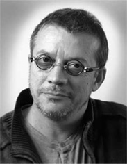

Sylvestre Chatenay
Photographe publicitaire pendant 13 ans, réalisateur depuis 1995.
Après une formation de photographe, je travaille durant une dizaine d’années en tant que photographe indépendant : dans la mode, la publicité, le reportage et la photo de studio.
Je réalise également au début des années 90 quelques expositions de photographies plus personnelles. Puis je deviens responsable de l’équipe médias chez Havas Interactive, à partir de 1996, sur des cédéroms encyclopédiques (Gallimard, Larousse...).
Parallèlement à mon travail photographique, je réalise quelques essais cinématographiques et audiovisuels, notamment une longue réalisation de morphing sur des œuvres de Dalí dans le cadre de l’exposition « De Rabelais à Dalí » en 1994.
Références choisies
- Yvette bon Dieu ! Auteur, réalisateur, cadreur du long métrage documentaire, sorti en salle en juillet 2008. Voir le film
- Un costume de maire pour Caroline Documentaire de 52 min sur le travail du maire dans une petite commune rurale, diffusé en octobre 2014. Voir le film
- Les campagnes de Marisol Touraine Documentaire de 52 min pour France 3 sur la vie et l’ascension d’une femme politique, diffusé en janvier 2013. Voir le film
- Jurons et charcuteries Auteur, réalisateur, cadreur et monteur du court métrage documentaire. Grand prix de la sélection internationale au 7ᵉ festival des « Très Courts » (2005). Voir le film
- Dalí : 10 recettes d’immortalité Auteur et réalisateur du projet de cédérom. Sélectionné pour le prix Möbius (présentation à Beaubourg).
- Découvertes, Gallimard-Larousse Directeur artistique de cette encyclopédie multimédia en 2D et 3D, MILIA d’or en 1998. Interview sur France 5.
- Cédéroms éducatifs Réalisation et production de plusieurs cédéroms éducatifs et encyclopédies pour Hachette Éducation, Larousse, Nathan.
- Hachette Éducation Plus de cent tournages et montages d’expériences de science physique.
- Spectacle vivant Captations et montages (TocToque, Sainte Solange...).
- Films corporate et institutionnels Voir les films d’entreprise